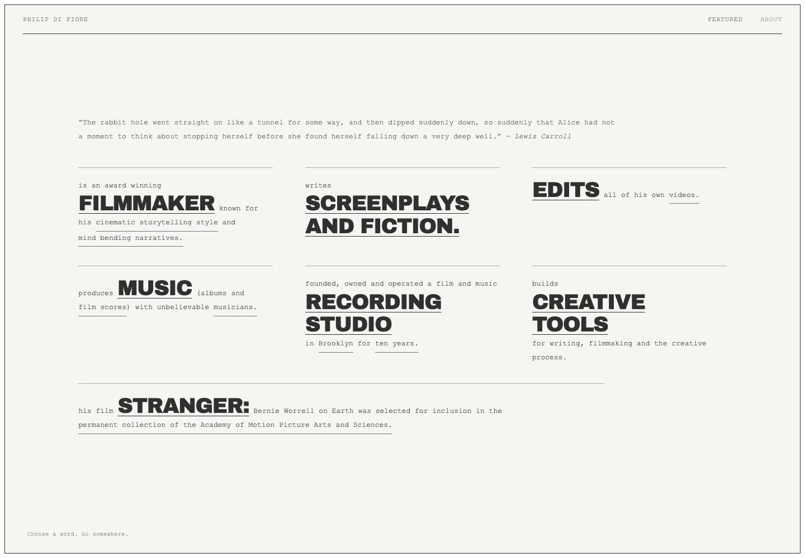
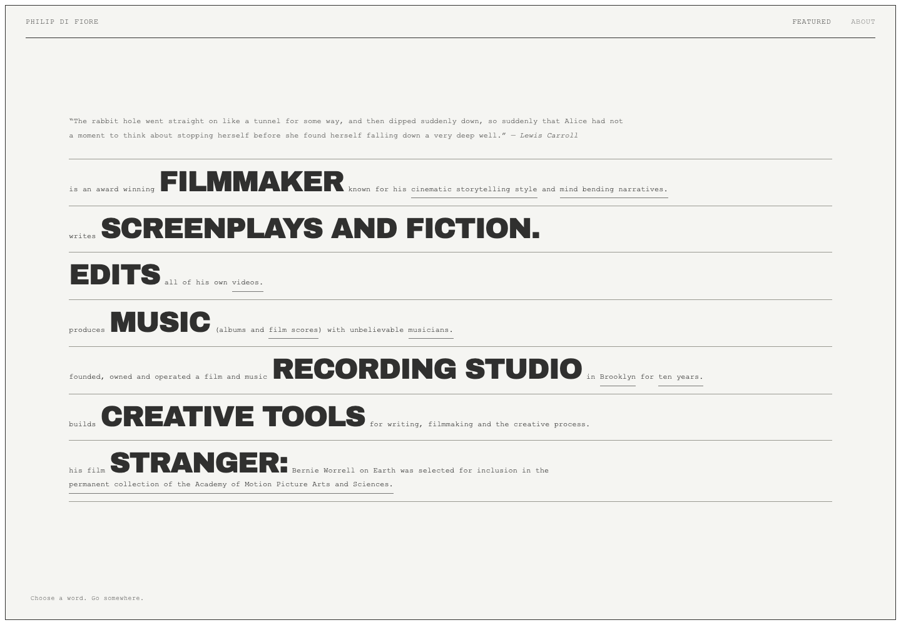
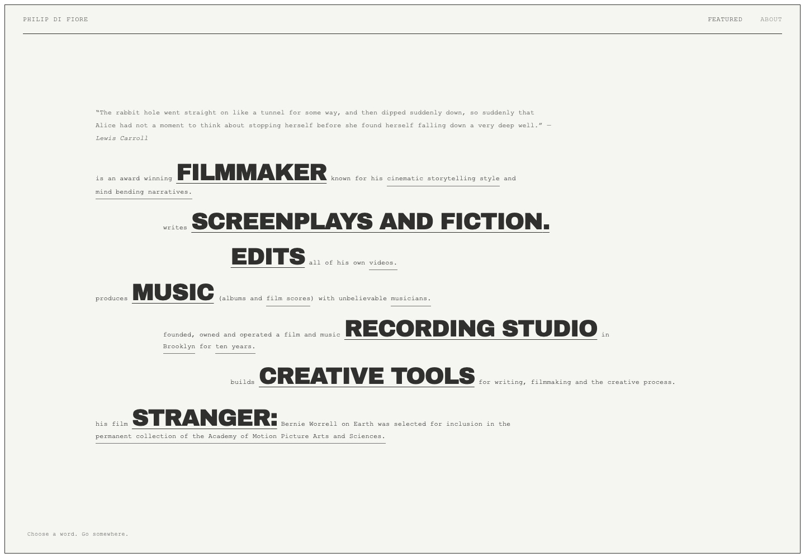
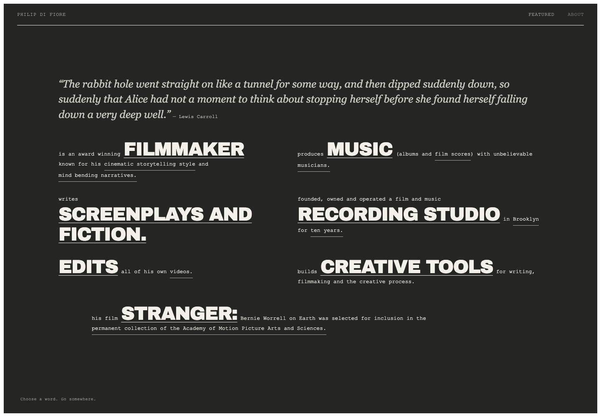
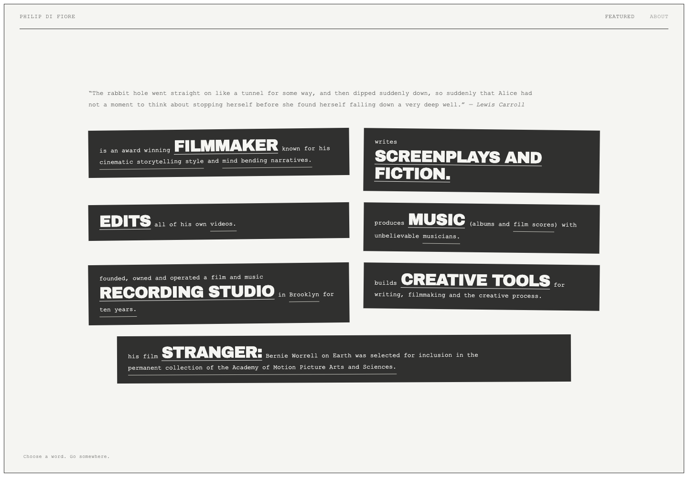

Five ways in.
The same biography. The same rabbit hole. Five visual arrangements. Click any study to explore it.

01
Typesetter’s Case
Three columns, clear spacing, a full-width closing passage.

02
Seven Passages
Seven horizontal bands, with the keywords carrying the rhythm.

03
The Descending Page
The biography steps across the page as it moves downward.

04
Charcoal Folio
White type in two fields of charcoal, with the quote above.

05
Cut Paper
The biography printed on seven separate charcoal pieces.